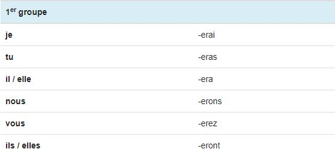
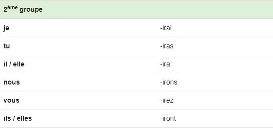
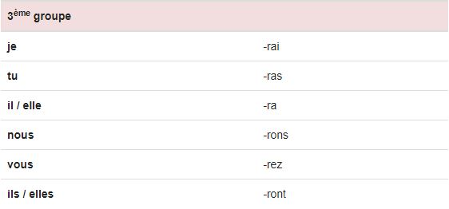
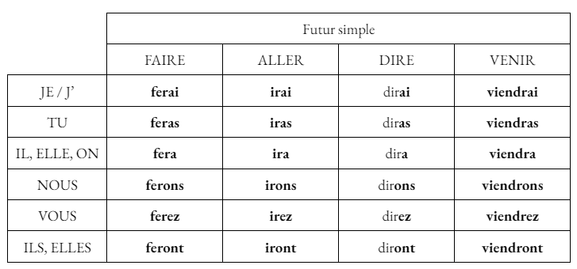
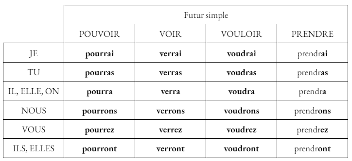
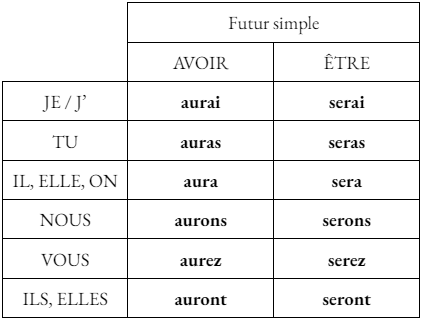

Le Futur
Utilisation
Le futur simple s'emploie principalement pour exprimer une action à venir. Cette action se déroulera plus tard, elle n'a pas encore eu lieu au moment où nous nous exprimons.
Terminaisons
Au futur simple de l'indicatif, tous les verbes prennent les terminaisons suivantes : -ai, -as, -a, -ons, -ez, -ont.
Voici, plus précisement, les terminaisons selon les groupes :
- Verbes du 1er groupe : 
- Verbes du 2ème groupe : 
- Verbes du 3ème groupe : 
Remarques
Au futur simple les verbes des 1er et 2ème groupes conservent généralement l'infinitif en entier: "chanter => je chanterai", "finir => je finirai".
Les verbes du 3ème groupe conservent parfois leur radical mais beaucoup sont irréguliers : "vouloir => je voudrai", "pouvoir = je pourrai".
Conjugaison des verbes faire, aller, dire, venir, pouvoir, voir, vouloir et prendre
 
Auxiliaires
Voici la conjugaison des deux auxiliaires avoir et être au futur simple de l'indicatif :

Maintenant que tu as bien compris les points de leçons, clique ici pour t'entraîner avec des verbes et des pronoms aléatoires : Exercice d'entraînement du futur